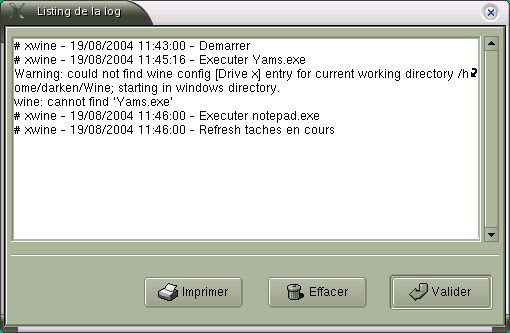

Chapitre 6. Utilisation Avancée
6.1. Les options de la ligne de commande
Depuis la version 1.0, Xwine permet la saisie d'options sur la ligne de
commande :
-
xwine
: permet de lancer XWine
- xwine file.exe : permet
d'exécuter une application Windows, sous contrôle de XWine
- xwine --config : cette option permet de
n'afficher que le Panneau de Configuration de Wine sans lancer le
bureau
XWine
- xwine --version : affiche le numéro de
version de XWine, puis sort.
- xwine --help : affiche
la liste des options de XWine, puis sort.
6.2. Le fichier log de XWine
Toute action effectuée dans XWine est enregistrée
dans un fichier log que l'on peut visionner en cliquant sur :
Démarrer>Paramètres>Voir Log
(accessible également par le Panneau de Configuration).

Contenu du fichier :
- les actions effectuées dans XWine : configuration,
exécution, installation...
- les messages provenant de Wine lors de l'exécution d'une
application
Lorsque vous quittez XWine vous avez la possiblité de conserver
ou de réinitialiser le fichier log.
REMARQUE 1 : N'hésitez pas à jeter un coup d'oeil
au fichier log, il peut contenir des informations très utiles
lorsque
vous rencontrez des problèmes.
REMARQUE 2 : Il est possible d'imprimer le contenu de la log
en cliquant sur <Imprimer>.
6.3. La barre de tâches de XWine
6.3.1. La barre de tâches
La principale nouveauté de la version 0.1.4
est l'ajout d'une barre de tâches, qui permet de supprimer une
application (qui fonctionnerait mal) via le bouton Kill.
Le bouton Refresh permet de mettre à jour
la barre des tâches.
6.3.2. Reset
En complément de la gestion via la barre des taches,
la commande Démarrer>Programmes>Reset
(disponible
depuis la v0.1.2) permet de libérer l'interface de
connexion du serveur wine. Lorsque vous supprimez une application via
le bouton Kill, il est conseillé de
libérer l'interface de connexion du serveur wine.